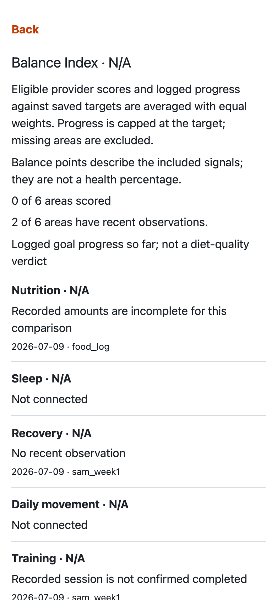
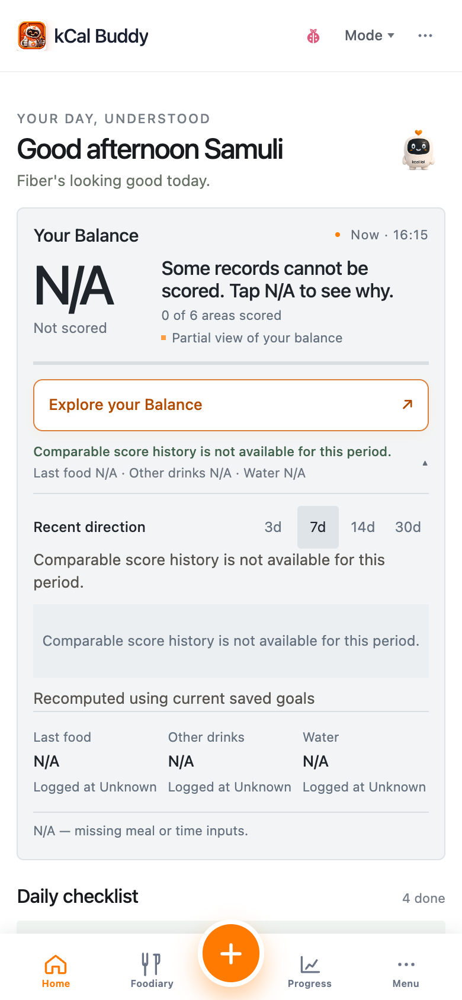
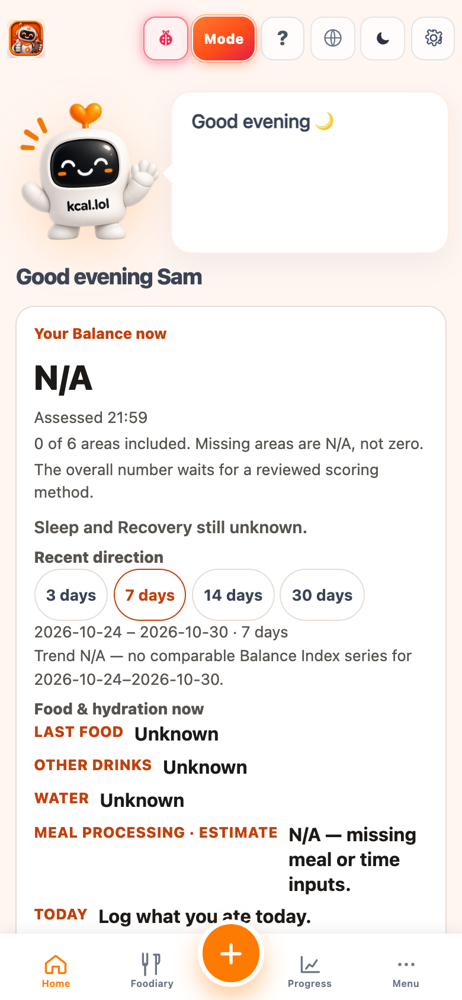
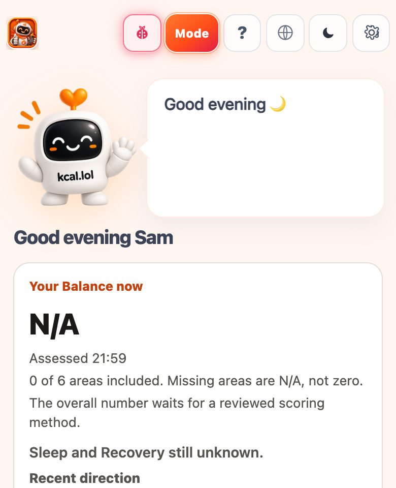
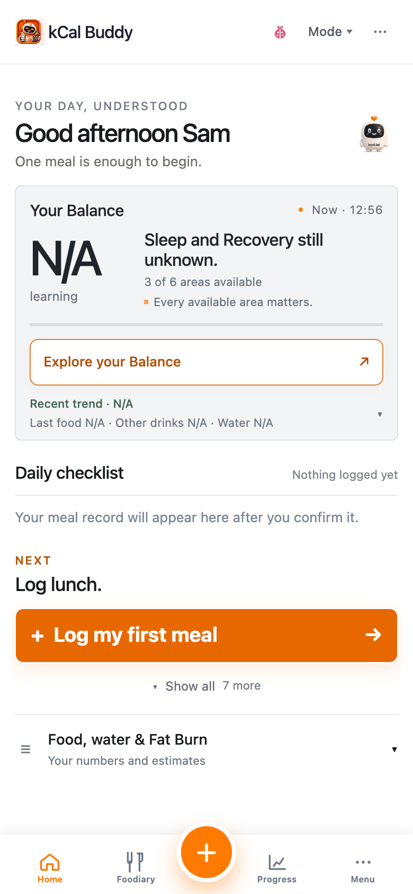

Hilfe · Home
Home — Bild-Guide
Playwright-Screenshots aus der App.
Deine Balance: Punkte aus verfügbaren Signalen
Deine Balance ist in Anfänger, Standard und Power verfügbar. Die Zahl von 0 bis 100 verbindet geeignete aktuelle Oura-Bewertungen für Schlaf, Bereitschaft und Aktivität mit dem erfassten Fortschritt gegenüber deinen gespeicherten Protein-, Wasser- und wöchentlichen Trainingszielen. Jeder bewertete Bereich hat das gleiche Gewicht. Protein und Wasser werden innerhalb des einen Ernährungsbeitrags gemittelt. Zielfortschritt bringt höchstens 100 Punkte.
Das sind Indexpunkte, kein Gesundheitsprozentsatz und kein Urteil über die Ernährungsqualität. Protein und Wasser beschreiben die bisher erfassten Mengen. Training berücksichtigt bestätigte abgeschlossene Einheiten aus sieben Kalendertagen einschließlich des Bewertungstags. Ein niedriger Fortschritt kann einen noch laufenden Tag oder unvollständige Einträge widerspiegeln. Er belegt weder schlechte Gesundheit noch Bewegungsmangel.
Die Abdeckung zeigt, wie viele der sechs möglichen Bereiche bewertet werden. Fehlende Bereiche bleiben außen vor und zählen nicht als null. Eine verbundene Quelle oder eine sichtbare Beobachtung wird nicht automatisch bewertet. Gewicht, Energieaufnahme und geschätzter Verbrauch bleiben unter Energiebilanz sichtbar; dafür gibt es in dieser Version keine vergleichbare Bewertungsregel. Andere geeignete Bereiche können trotzdem eine Zahl ergeben.
Zahl öffnen und Belege prüfen
Tippe auf die Balance-Zahl, um für jeden Bereich die Punkte oder den Grund für fehlende Punkte, Beobachtungsdatum und Quelle sowie die verwendeten Mengen und gespeicherten Ziele zu sehen. Tippe auf einen Bereich, um seine Belege zu prüfen. Eine geplante oder nicht eindeutig abgeschlossene Einheit gilt nicht als bestätigtes Training. Wasser zählt nur mit einem Wassereintrag und einem gespeicherten Wasserziel. Ein fehlender Wassereintrag ist keine beobachtete Null.
Wenn kein Bereich geeignet ist, zeigt die Zahl N/A oder Nicht bewertet mit einer Erklärung. Einträge können noch laden, fehlen, zu alt oder nicht lesbar sein. Eine Verbindung kann abgelaufen oder ihre Berechtigung widerrufen worden sein. Einer Beobachtung kann auch ein unterstützter Anbieterwert oder ein geeignetes gespeichertes Ziel fehlen. Prüfe den Grund des Bereichs, bevor du mehr einträgst oder ein Ziel änderst.
Verlauf über 3, 7, 14 und 30 Tage lesen
Öffne Letzte Richtung unter Deine Balance; klappe in der Anfängeransicht zuerst die Details auf. Wähle 3, 7, 14 oder 30 Tage und dann einen erfassten Tag, um seine Punkte und Bereichsbelege zu sehen. Der Verlauf wird aus deinen aktuell sichtbaren Einträgen mit deinen aktuell gespeicherten Zielen neu berechnet. Er ist keine gespeicherte Aufzeichnung darüber, welche Ziele an einem vergangenen Tag galten.
Nur Tage mit geeigneten erfassten Beobachtungen erhalten Punkte. Lücken bleiben sichtbar. Wenn sich bewertete Bereiche oder Vergleichsregeln ändern, ist ein direkter Vergleich der Punkteänderung möglicherweise nicht möglich. Heute läuft noch und bleibt von Vergleichen abgeschlossener Tage getrennt. Ein abgeschlossener Kalendertag beweist nicht, dass jede Mahlzeit oder Aktivität erfasst wurde.

home-balance-calculation.png — Example Sam — Balance-Berechnung. Die Verfügbarkeit hängt von erfassten Beobachtungen ab; Werte können N/A anzeigen.
home-balance-history.png — Example Sam — neu berechneter Balance-Verlauf. Verfügbare Tage hängen von erfassten Beobachtungen ab; Lücken oder N/A können erscheinen.


Nur Foodiary ohne kcal → Progress bleibt 0. Zuerst Buddy Log auf Home.